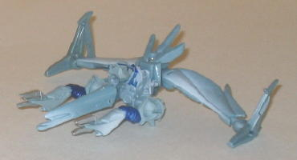
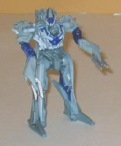

Battle
Jazz vs. Ice Megatron ("Allspark Battles" Legends)
Battle
Jazz vs. Ice Megatron ("Allspark Battles" Legends)
Price
: ~$8 U.S.
Overall Rating
: 7.1
 Battle
Jazz
Battle
Jazz
Allegiance
: Autobot
Size
: Legend
Difficulty of Transformation
: Very
Easy
Color Scheme
: Light milky gray,
black, and some dull yellow, dull red, pale sky blue, and metallic black
Individual Rating
: 6.9
(NOTE: Because this is a repaint, this is not a full-blown review. This mainly covers any changes made to the mold and the color scheme, and merely compares it to the original Legends class Jazz toy. For a review on the mold itself, read the review of the original Legends class Jazz toy here .)
Ugh. After a THIRD use
of this Legends mold, do we really need ANOTHER mass-released version that's
pretty much the same as the other two? Talk about a waste of a repaint.
Anyways, Battle Jazz has the exact same colors and paint apps as the
first
"Allspark Battles" Jazz
, but with a few vehicle mode paint apps removed
and replaced with some painted-on "battle damage" cracks in robot mode.
Big whoop. Not even enough of a difference to make it worth taking pics
of.
No mold changes have
been made to Battle Jazz.
Ice
Megatron


Allegiance
: Decepticon
Size
: Legend
Difficulty of Transformation
: Very
Easy
Color Scheme
: Light pale grayish
blue, chalky off-white, and some dark red, silver, and dark glossy blue
Individual Rating
: 7.2
(NOTE: Because this is a repaint, this is not a full-blown review. This mainly covers any changes made to the mold and the color scheme, and merely compares it to the original Legends class Megatron toy. For a review on the mold itself, read the review of the original Legends class Megatron toy here .)
"Ice" Megatron may not
be creatively named, but his color scheme certainly fits the bill-- it's
an icier version of his normal colors, as if he's just come out of the
deep freeze. The pale bluish-gray works well as a main color when combined
with the dark blue, as both contrast extremely well. The white "frost"
spray apps on most of the toy also look pretty good too, and dissolve quite
well into the bluish gray. It's only when compared to the mold's previous
paint job that Ice Megatron falls a bit short-- he looks a bit too much
like his old toy under bluish lighting rather than a brand-new paint scheme.
Personally, I think swapping the bluish-gray and the dark blue coloration
would have done wonders for making Ice Megatron look more like a bonafied
repaint as opposed to more of a tweak on the old colors. (Plus, I think
it would look better, too.)
No mold changes have
been to Ice Megatron.
Mold-wise, the Battle
Jazz vs. Ice Megatron 2-pack is one of the more impressive Allspark Battles
packs, but color-wise they definitely could use some innovation. Battle
Jazz is pretty much the same as BOTH of his previous Legends versions,
and Ice Megatron only has a bluish gray replacing his former gray. If you
have the previous versions of either of these molds, don't bother-- otherwise,
you may want to look into it.
Review by Beastbot